인쇄산업기사 (2008-05-11 기출문제)
1과목: 인쇄공학
1. 접지 모음에서 쪽맞추기를 할 때나 접장이 잘못된 것을 쉽게 알기 위해 접장의 등쪽에 표시를 한 것을 무엇이라고 하는가?
- 확인표
- 간지
- 등표
- 맞춤표
(정답률: 알수없음)

2. 잉크의 매질로 사용되는 식물섬유를 건성유, 반건성유, 불건성유로 나눈다. 불건성유의 요오드값은?
- 180 이상
- 130 ~ 180
- 100 ~ 130
- 100 이하
(정답률: 알수없음)
3. 다음 중 정전기가 가장 발생하기 쉬운 환경 조건은?
- 고온 다습
- 20°C, 습도 60%
- 저온 다습
- 저온 건조
(정답률: 알수없음)
4. 20°C에서 포화량이 공기 1m3 중에 수중기가 14.8g일 때 실제 수증기량이 12g/m3라면 상대습도는 약 몇 % 인가?
- 12.8
- 14.8
- 20.1
- 81.1
(정답률: 알수없음)
5. 재해예방의 기본 4원칙에 해당되지 않는 것은?
- 원인연계의 원칙
- 예방가능의 원칙
- 손실필연의 원칙
- 대책선정의 원칙
(정답률: 알수없음)
6. 인쇄물의 백지 반사율과 검은색 화선부의 반사율 차를 인쇄물의 뒷면에서 측정하여 보기와 같이 구한 값을 무엇이라고 하는가? (단, RA 는 백지의 반사율, R8 는 뒷면의 반사율이다.)
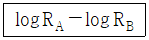
- 망점면적율
- 뒤비침값
- 인쇄농도
- 평균화선밀도
(정답률: 알수없음)
7. 인쇄 잉크에 순간적으로 외력을 가하면 원상태로 돌아가지만 천천히 외력을 가하면 변형된 상태 그대로 있는데 이러한 현상을 무엇이라고 하는가?
- 점탄성(Viscoelasticity)
- 요변성(Thixotropy)
- 택(Tack)
- 유동성(Fluidity)
(정답률: 알수없음)
8. 소성 유동을 하는 잉크에서 일정 외력이 가해진 후에 유동을 시작하는데, 이 때 일정 외력을 나타낼 때의 한계치를 무엇이라고 하는가?
- 점탄성가
- 요오드가
- 항복가
- 유동가
(정답률: 알수없음)
9. 다음 중 금속 표면과 기름과의 접촉에서 친유성이 가장 큰 접촉각은?
- 30°
- 45°
- 60°
- 80°
(정답률: 알수없음)
10. 평판인쇄에서 습수와 잉크간의 유화(Emulsification)에 대한 설명 중 옳지 않은것은?
- 습수와 잉크사이에서 유화는 전혀 일어나서는 안된다.
- 일반적으로 잉크의 유화가 너무 적으면 잉크의 전이가 나빠진다.
- 일반적으로 잉크의 유화가 지나치면 인쇄 더러움의 원인이 된다.
- 잉크의 유화가 많아지면 인쇄물의 건조가 늦어진다.
(정답률: 알수없음)
11. 다음은 무엇에 대한 설명인가?
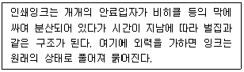
- 항복값(yield value)
- 유동도(fluidity)
- 요변성(thixotropy)
- 점탄성(viscoelaticity)
(정답률: 알수없음)
12. 종이는 주위환경에 따라 물성이 달라진다. 일반적으로 상대습도 10%의 변화에 따라 평량(g/m2)은 약 어느정도의 변화를 갖는가?
- 1%
- 5%
- 10%
- 15%
(정답률: 알수없음)
13. 쌓인 종이의 무게로 인해 인쇄된 용지의 뒷면에 잉크가 묻는 현상은?
- 슬러(slur)
- 초킹(chalking)
- 셋트 오프(set off)
- 더블링(doubling)
(정답률: 알수없음)
14. 종이의 섬유질 결합이 약하여 종이조각, 코팅제가 판이나 블랭킷에 붙어 인쇄 반점이 일어나는 현상은?
- 초킹
- 콜렉팅
- 모틀링
- 스커밍
(정답률: 알수없음)
15. 인쇄기상에서 인쇄 잉크의 유동성(流動性)과 가장 관계가 적은것은?
- 퍼짐성
- 전이성
- 반발성
- 이행성
(정답률: 알수없음)
16. 다공성 재료의 잉크 침투에 의해 나타나는 인쇄물의 특성으로 가장 거리가 먼것은?
- 투묘 효과(Anchor effect)
- 뒤비침(Print through)
- 초킹(Chalking)
- 망점 확대(Dot gain)
(정답률: 알수없음)
17. Murray-Davis에 의한 인쇄물에서의 하프톤값 계산법을 옳게 나타낸 것은? (단, HV(%) : 인쇄물에서 하프톤값, DH: 하프톤 농도, DS: 민판 인쇄의 농도를 나타낸다.)
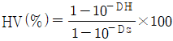
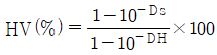
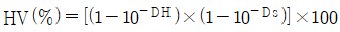
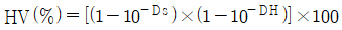
(정답률: 알수없음)
18. 제책공정 중 등굳힘 작업에 대한 설명으로 옳지 않은것은?
- 굳히는 쪽에 따라 머리풀매기, 밑풀매기, 옆풀매기라고 한다.
- 굳힘하는 쪽에 색을 필요로 하는 경우는 염료로 착색한다.
- 접착제는 끝부분부터 중앙 쪽으로 얼룩이 지지 않게 도포하는 것이 원칙이다.
- 등에 붙이는 박엽지는 가로결을 사용하지만 갈라짐 방지를 위해 세로결을 사용하기도 한다.
(정답률: 알수없음)
19. 인쇄물의 필름접착(라미네이션)에 사용되는 필름으로 가장 적합하지 않은 것은?
- 폴리프로필렌
- 폴리에틸렌
- 염화비닐
- 셀로판
(정답률: 알수없음)
20. 재해 원인의 분석방법 중 개별적 원인분석 방법에 대하여 잘못 설명한 것은?
- 재해건수가 적은 사업장에 적용한다.
- 특수한 재해 또는 중대 재해 분석에 적합하다.
- 개개의 재해 특유의 조사항목을 사용할 수 있다.
- 조사 항목은 공통 표준항목을 적용해야 한다.
(정답률: 알수없음)
2과목: 인쇄재료학
21. 갈리덴시토미터(Garley's densitometer)로 공기가 종이를 통과하는 시간을 측정하는데 이 때 측정하는 물성은 무엇인가?
- 평활도
- 기공도
- 흡유도
- 인장강도
(정답률: 알수없음)
22. 다음 중 회전형 점도계가 아닌것은?
- 오스트발트(ostwalt) 점도계
- 스토머(stormer) 점도계
- 브룩필드(Vrookfield)점도계
- 그린(Green) 점도계
(정답률: 알수없음)
23. 펄프를 물속에서 기계적 처리를 하여 섬유의 형태나 구조를 변화시키는 공정은?
- 사이징
- 전충
- 윤내기
- 비팅
(정답률: 알수없음)
24. 망점재현성과 광택, 피막강도, 내약품성 등이 우수하며 종이, 플라스틱, 라미네이팅 재료 등의 치수안정성과 재질을 손상시키지 않고 고속으로 인쇄할 수 있는 잉크의 건조방법으로 가장 적절한 것은?
- 광경화 건조
- 열경화 건조
- 침투 건조
- 산화중합 건조
(정답률: 알수없음)
25. 인쇄물의 화선부가 굵어지는 경우를 타크닝(thickening)이라고 하는데 이것의 발생 원인이 아닌것은?
- 인쇄압이 너무 강할 때
- 잉크 전이량이 너무 많을 때
- 습수량이 너무 적을 때
- 블랭킷이 너무 단단할 때
(정답률: 알수없음)
26. 할로겐화은 결정의 고유 감광 파장영역은?
- 200 ~ 400nm
- 350 ~ 480nm
- 400 ~ 700nm
- 900 ~ 1200nm
(정답률: 알수없음)
27. 잉크의 유동성을 측정하는 잉코메타(inkometer)는 잉크의 어떤 성질을 측정하는가?
- 쇼트니스(shortness)
- 그리싱(greaching)
- 택(tack)
- 트래핑(trapping)
(정답률: 알수없음)
28. 알루미늄판의 내산성과 내알칼리성을 좋게 하여 내쇄력을 대폭 증가시킨 PS판 제조공정은?
- 사목 세우기(graining)
- 정면(counter etch)
- 부식(etching)
- 양극산화(anodizing)
(정답률: 알수없음)
29. 다음은 백색안료인 황산바륨을 만드는 반응이다. ( )안에 알맞은 것은?
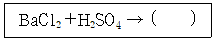
- BaSO3 + HCl
- BaSO4 + HCL
- BaSO4 + 2HCl
- BaSO3 + 2HCl
(정답률: 알수없음)
30. 다음 중 리스(Lith)형 필름의 특성으로 옳지 않은것은?
- 유제층이 엷고 경막으로 처리되어 있다.
- 일반 필름에 비하여 은양의 비율이 크다.
- 입자가 미세하고 고르다.
- 은양의 비율이 크고 전염현상을 하지 못한다.
(정답률: 알수없음)
31. 종이의 시험법에서 종이를 증류수에 끓이고 그 액에 메틸 오렌지를 지시약으로 하여 규정 알칼리 용액을 떨어 EM려 측정하는 시험법은 무서을 측정하기 위한 것인가.
- 강도
- 평활도
- 산성도
- 기공도
(정답률: 알수없음)
32. 일반적인 스크린 잉크가 갖추어야 할 성질로 가장 적합한 것은?
- 예사성이 길고, 기름기가 많은 것
- 예사성이 길고, 기름기가 적은 것
- 예사성이 짧고, 기름기가 많은 것
- 예사성이 짧고, 기름기가 적은 것
(정답률: 알수없음)
33. 지지체 쪽에서 노출이 되는 좌우 반전 촬영용 필름에 해당되는 것은?
- 명실용 필름
- 클리어 백 필름
- 팬크로리스형 필름
- 오토스크린 오르토형 필름
(정답률: 알수없음)
34. 다음 설명이 의미하는 물질은 무엇인가?
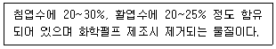
- 셀룰로오스
- 헤미셀룰로오스
- 리그닌
- 추출물
(정답률: 알수없음)
35. 다음 제지 공정에 대한 설명으로 옳은 것은?
- 사이징 : 종이의 앞뒤가 만들어진다.
- 전충 : 종이를 순백 ㆍ 불투명하게 한다.
- 초지 : 종이에 소수성을 부여하며 펄프를 분산시킨다.
- 코팅 : 소수성 콜로이드 물질로 감싸는 공정이다.
(정답률: 알수없음)
36. 평판에 사용되는 아연판용 부식액 중 PVA 감광액을 사용 하는 경우에 부식액 조성이 아닌 것은?
- 염화칼슘용액
- 염화제1주석
- 염산
- 수산화나트륨용액
(정답률: 알수없음)
37. 다음 중 흰색 안료가 아닌것은?
- 스트론튬염
- 산화티탄
- 아연화
- 리토폰
(정답률: 알수없음)
38. 오프셋인쇄에서 사용되는 축임물은 종이의 함수율에 영향을 미친다. 인쇄시 축임물에 의한 수분증가는 어느 정도 범위인가?
- 0.5 ~ 1%
- 3 ~ 5%
- 8 ~ 10%
- 15 ~ 20%
(정답률: 알수없음)
39. 100g/m2인 종이의 두께를 90㎛에서 85㎛로 조절하고자한다. 이 때 종이 제조 공정 중 어떤 공정에서 종이의 두께를 주절해야 하는가?
- 고해
- 초지
- 프레스
- 칼렌딩
(정답률: 알수없음)
40. 다음 중 인쇄판의 화선부 금속으로 주로 사용되며, 비중은 약 8.9로서 친유성이 있고 내쇄력이 가장 우수한 금속은?
- 구리(Cu)
- 알루미늄 (Al)
- 아연(Zn)
- 니켈 (Ni)
(정답률: 알수없음)
3과목: 인쇄색채학
41. 어떤 색을 보고 난 후에 다른 색을 보는 경우에 일어나는 대비현상은?
- 색상대비
- 동시대비
- 계시대비
- 채도대비
(정답률: 알수없음)
42. 물체에 빛이 입사하였을 때 일어나는 빛의 변화로 가장 거리가 먼 것은?
- 표면반사
- 선택흡수
- 산란
- 표면분리
(정답률: 알수없음)
43. 측색 장치인 분광광도계에서 일어날 수 있는 3가지의 계통적 오차에 해당하지 않는 것은?
- 백색기분 오차
- 흑색기준 오차
- 파장 오차
- 회색기준 오차
(정답률: 알수없음)
44. 푸르킨예(Purkinje) 현상에 대한 설명으로 옳은 것은?
- 낮에 본 빨간 사과는 밤에도 빨갛게 보인다.
- 어두운 곳에서 명시도를 높이기 위해서는 빨강이나 노랑을 사용 하는 것이 좋다.
- 초저녁에 가까워질수록 초목의 잎이 선명하게 느껴진다.
- 밤에는 파장이 짧은색이 먼저 사라지고 파장이 긴 색이 나중에 사라진다.
(정답률: 알수없음)
45. 다음 중 인쇄의 컬러 관리에 필요한 색 공간과 가장 거리가 먼 것은?
- CIE LAB
- CIE XYZ
- RGB
- CMYK
(정답률: 알수없음)
46. 다음 그림은 색의 3속성을 색입체로 나타낸 것이다. A 는 무엇을 의미하는가?
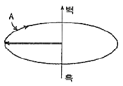
- 색상
- 명도
- 채도
- 순도
(정답률: 알수없음)
47. 명도가 다른 두 색이 서로 영향을 받아 밝은 색은 더 밝게 어두운 색은 더 어둡게 보이는 현상과 가장 관계가 있는 대비현상은?
- 연변대비
- 색상대비
- 명도대비
- 채도대비
(정답률: 알수없음)
48. 물체를 측색한 결과로 CIE XYZ 의 3자극치가 각각 10, 20, 10 일 때 x, y 색도좌표 값은 각각 얼마인가?
- x = 0.15, y = 0.65
- x = 0.25, y = 0.50
- x = 0.45, y = 0.25
- x = 0.62, y = 0.15
(정답률: 알수없음)
49. 색에 관한 용어 중 눈에 들어와서 시감각을 일으키는 방사로서 이 방사는 분광조성에 의하여 결정하는 것은?
- 개구색(開口色)
- 비시감도(比視感度)
- 휘도(輝度)
- 색자극(色刺戟)
(정답률: 알수없음)
50. 분광반사율의 분포가 서로 다른 2개의 색자극이 특정한 조명 아래에서는 동일한 색으로 보이나 조명의 분광분포가 달라지면 다르게 보이는 현상을 무엇이라고 하는가?
- 메타메리즘
- 컬러어피어런스
- 아이소메리즘
- 색채적응
(정답률: 알수없음)
51. 먼셀 표색계에서 색의 표시를 보기와 같이 나타낼 수 있는데 여기서 4 와 14는 각각 무엇을 나타내는가?
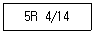
- 4 : 채도, 14 : 명도
- 4 : 명도, 14 : 채도
- 4 : 색상, 14 : 채도
- 4 : 채도, 14 : 색상
(정답률: 알수없음)
52. Yellow 잉크로 인쇄된 부분을 R, G, B 필터를 사용하여 농도를 측정했을 때 다음 표와 같이 나타났다. Yellow 잉크의 색상효율(%)은 얼마인가?
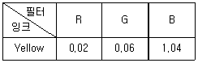
- 1.92
- 3.92
- 52.00
- 96.15
(정답률: 알수없음)
53. 오스트발트 표색계는 헤링의 4원색설을 기본으로 하여 색상을 분할하는데 다음 중 4원색에 대하여 옳게 나타낸 것은?
- magenta, yellow, green, cyan
- red, yellow, purple, blue
- orange, purple, turquoise, leaf green
- yellow ultramarine blue, red, sea green
(정답률: 알수없음)
54. 온도감은 색의 3속성 중 무엇에 가장 큰 영향을 받는가?
- 명도
- 채도
- 색상
- 순도
(정답률: 알수없음)
55. 시료와 표준색표를 나란히 놓고 측정할 때 배경의 영향으로 잘못 측정하기 쉽다. 이러한 현상을 줄이기 위해 주로 사용하는 기기는?
- 마스크
- 필터
- 조도계
- 농도계
(정답률: 알수없음)
56. 장치독립 CIE L*a*b* 색공간에 대한 설명 중 틀린것은?
- a*값이 - 쪽에 가까워질수록 green을 띤다.
- 기준 백색에 대한 3자극치 값을 이용한다.
- a*값이 +쪽에 가까워질수록 red를 띈다.
- b*값이 + 쪽에 가까워질수록 blue를 띈다.
(정답률: 알수없음)
57. 다음 그림은 감법혼색을 기초로 한 C, M, Y 및 R, G, B 컬러의 혼색에 관한 것이다. 1 과 2 에 해당하는 컬러는? (단, C : Cyan, M : Magenta, Y : Yellow, R : Red, G : Green, B : Blue, BK : Black 을 나타낸다.)
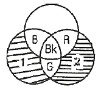
- 1 - C, 2 – Y
- 1 - C, 2 - M
- 1 - Y, 2 – M
- 1 - Y, 2 - C
(정답률: 알수없음)
58. 다음 중 시료의 절대분광반사율을 구하는 식으로 옳게 나타낸 것은? (단, R(λ)은 절대분광반사율, S(λ)는 시료의 측정 시그널, B(λ)는 Base line calibration factor, W(λ)는 백색표준의 절대분광반사율 값이다.)
- R(λ) = S(λ) × B(λ) × W(λ)
- R(λ) = S(λ) + B(λ) +W(λ)
- R(λ) = S(λ) - B(λ) - W(λ)
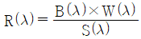
(정답률: 알수없음)
59. Ostwald 표색계에서 순색량이 8, 백색량이 14, 흑색량이 78일 때 이 색의 Ostwald 순도는 약 얼마인가?
- 0.10
- 0.18
- 0.57
- 1.75
(정답률: 알수없음)
60. 다음 그래프는 가시파장역에 있어서 어떤 원색 잉크의 이상적인 분광투과율을 나타낸 것이다. 어떤 잉크에 해당 되는가?
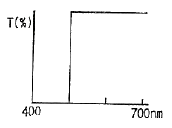
- magenta
- yellow
- cyan
- Black
(정답률: 알수없음)
4과목: 사진제판공학
61. 컬러 스캐너에서는 USM(unsharp mask, 부신호) 신호에 의해 샤프니스의 향상효과를 얻는다. USM 신호에는 일반적으로 어떤 색 신호를 사용하는가?
- Green
- Yellow
- Magenta
- Cyan
(정답률: 알수없음)
62. 인쇄물의 품질 관리를 위한 시그널스트립을 구성하는 플레이트가이드 부분의 변화 중에서 제판이 노광 과다인 경우 어떠한 현상이 일어나는가?
- 인쇄판의 망점과 필름에 있는 망점이 같아진다.
- 인쇄판의 망점은 필름의 망점보다 작아진다.
- 인쇄판의 망점은 필름의 망점보다 커진다.
- 인쇄판의 망점이 필름의 망점보다 어둡게 보인다.
(정답률: 알수없음)
63. 사진제판용 광원으로 태양광과 유사한 분광에너지 분포를 가지며, 자외선 및 적외선에서도 풍부한 에너지를 갖는 광원은?
- 카본 아크등
- 석영 요오드등
- 크세논등
- 백열등
(정답률: 알수없음)
64. 스크린 인쇄에서 인쇄회로기판을 제작할 때 인쇄회로를 인식할 수 있도록 하는 인쇄하는 공정은?
- 솔더 인쇄
- 설계도면 인쇄
- 마킹 인쇄
- 코팅 인쇄
(정답률: 알수없음)
65. 평판 스캐너나 드럼 스캐너에서 공통적으로 사용되며 아날로그 신호를 디지털 신호로 바꾸어 주는 장치는?
- RIP
- A/D 컨버터
- CCD
- PMT
(정답률: 알수없음)
66. 다색 교정물의 작성에서 정전사진 간이 교정법에 대한 설명으로 옳은 것은?
- 1장의 불투명 흰색 지지체 위에 각 색 화상을 차례로 형성하는 다색 발색 방법
- 잉크 안료를 포함한 감광제와 그것을 전사하는 지지체 대지로 구성되어 있으며 전용전사기로 전사하는 방법
- 전자 사진법에 의한 다색 중첩법이며 고급 아트지에 산화아연 도전성 물질을 균일하게 칠한 종이를 사용하여 습식으로 현상하는 방법
- 투명 지지체 위에 각 색 화상을 형성시켜 백지 위에 4장을 겹쳐 맞추어 보는 방법
(정답률: 알수없음)
67. 사진에서 헐레이션 현상은 화상의 선예도를 손상시키는데 주로 어느 계조부가 손상되어 표현되는가?
- 섀도부
- 하이라이트부
- 중간부
- 전체적인 계조부
(정답률: 알수없음)
68. 전체적으로 인쇄물의 색상 불균형으로 비실제적인 컬러상태인 것을 무엇이라고 하는가?
- 명암압축
- 컬러캐스트
- 무아레
- 모틀링
(정답률: 알수없음)
69. 다음 중 교정인쇄를 하는 목적으로 가장 거리가 먼 것은?
- 고객에게 승인을 얻기 위하여
- 인쇄 샘플제작을 위하여
- 경험과 감각을 얻기 위하여
- 제판공정 상태를 점검하기 위하여
(정답률: 알수없음)
70. 노출 후 필름을 장시간 동안 방치하면 감도저하현상이 일어나는데 이러한 현상을 무엇이라고 하는가?
- 상반칙불궤 현상
- 톤라인 현상
- 잠상퇴행 현상
- 솔라리제이션 현상
(정답률: 알수없음)
71. 전자 출판의 인쇄 사진처리에서 일반적으로 사용되는 보간의 종류에 해당하지 않는 것은?
- 최단입점 보간
- 쌍선형 보간
- 쌍입방 보간
- 최쌍입방 보간
(정답률: 알수없음)
72. 사진법에 의한 교정에서 단색 교정법에 해당되는 것은?
- 오버레이법
- 브라운 인화법
- 전자 사진법
- 서프린트법
(정답률: 알수없음)
73. 망점 재현은 불연속 재현이기 때문에 망점 크기가 급격히 변화하는 부분에서 농도도 급격히 변화한다. 이것을 무엇이라 하는가?
- 플레어
- 농도점프
- 헐레이션
- 그라데이션
(정답률: 알수없음)
74. 망점 원고를 스캐닝할 때 디지털 이미지의 무아레 발생을 줄이기 위한 작업으로 가장 거리가 먼 것은?
- photoshop 필터의 Blur 효과 이용
- 스캐너의 디스크린 기능 사용
- 언샤프 마스크 사용
- 트레이 상에 유리 1장을 놓고 그 위에 원고를 세트하여 사용
(정답률: 알수없음)
75. 스크린 제판에서 아교, 래커 또는 셀락을 건조되지 않은 유동성 물질로 스크린 망사 위에 직접 묘사하여 화선부를 제외한 나머지 부분을 막는 방법은 무엇인가?
- 블로킹 아웃법
- 종이 스텐실법
- 조각 제판법
- 묘화 제판법
(정답률: 알수없음)
76. 드럼 스캐너에서 필터에 의하여 분리된 약한 빛을 감지하는 장치는?
- 광전자증배관
- 전하결합소자
- A/D 컨버터
- 반사경
(정답률: 알수없음)
77. 컬러 스캐너에 있어서 윤곽강조(샤프니스 강조)를 필요로 하는 이유로 가장 거리가 먼 것은?
- 원고 농도역이 압축 재현되기 때문에 화상의 콘트라스트가 저하되는 것을 보정하기 위해
- 스크리닝에 의한 해상도 및 첨예도의 열화를 보정하기 위해
- 이상적인 잉트와 실제 잉크와의 색차에 의한 색재현을 보정하기 위해
- 인쇄 용지의 핀트 정확성, 망점 어긋남 등에 의한 경계의 불선명화를 보정하기 위해
(정답률: 알수없음)
78. 교정인쇄 관리에서 공정관리를 위한 교정에 해당하지 않는 것은?
- 사진의 올바른 배치
- 각 판의 맞춤
- 톤 밸런스와 컬러 밸런스
- 수주자와 발주자사이의 계약서적인 교정인쇄물 제작
(정답률: 알수없음)
79. 제판용 광원이 갖추어야 할 조건으로 가장 부적합한 것은?
- 분광에너지 분포가 균일해야 한다.
- 광원의 종류에 관계없이 색온도가 동일해야 한다.
- 작업의 안정화를 위해 발광량이 일정해야 한다.
- 열의 발생으로 인한 전력소비가 적어야 한다.
(정답률: 알수없음)
80. 컬러 스캐너의 출력장치에서 아르곤 레이저의 출력감도 파장으로 가장 적합한 것은?
- 488nm
- 633nm
- 680nm
- 820nm
(정답률: 알수없음)